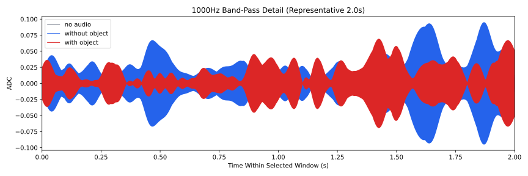
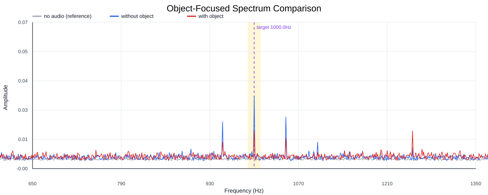
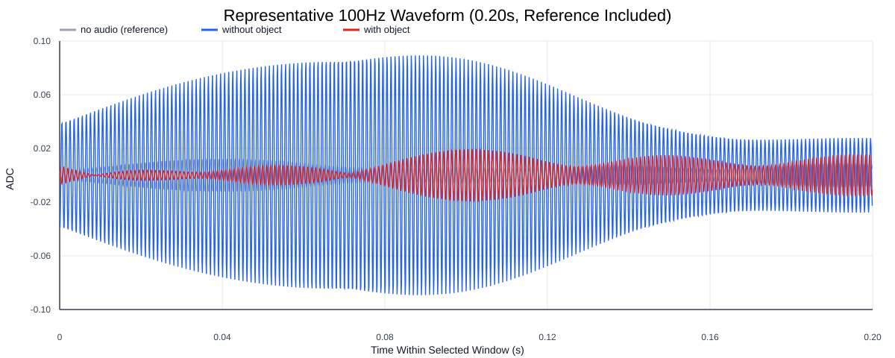
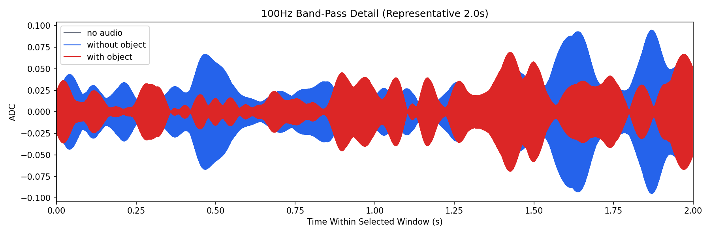
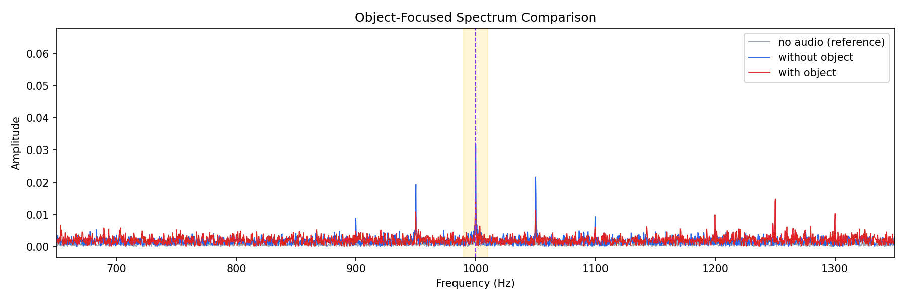
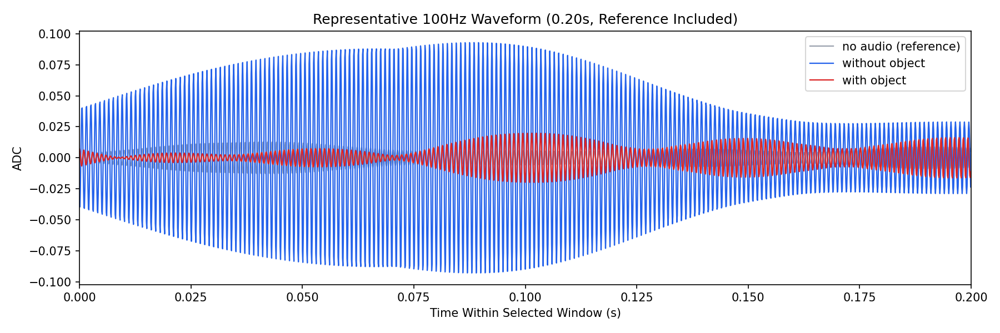

Background: F:\项目类文件夹\异物检测4.10\Data_Dual\frequency_sweep\1000Hz\repeat_05\raw\no_audio.csv
Without object: F:\项目类文件夹\异物检测4.10\Data_Dual\frequency_sweep\1000Hz\repeat_05\raw\without_object.csv
With object: F:\项目类文件夹\异物检测4.10\Data_Dual\frequency_sweep\1000Hz\repeat_05\raw\with_object.csv
| Metric | 无音频 | 100Hz无异物 | 100Hz有异物 | 无异物/无音频 | 有异物/无异物 | 有异物/无音频 |
|---|---|---|---|---|---|---|
| centered_rms | 0.083278 | 0.182601 | 0.206361 | 2.1927 | 1.1301 | 2.4780 |
| raw_target_amp | 0.000350 | 0.031897 | 0.014602 | 91.1549 | 0.4578 | 41.7282 |
| filtered_rms | 0.005450 | 0.031919 | 0.018063 | 5.8564 | 0.5659 | 3.3141 |
| filtered_target_amp | 0.000350 | 0.031897 | 0.014602 | 91.1549 | 0.4578 | 41.7282 |
| filtered_energy_ratio | 0.004283 | 0.030555 | 0.007661 | 7.1337 | 0.2507 | 1.7887 |
| window_filtered_target_amp_mean | 0.006352 | 0.039467 | 0.021445 | 6.2129 | 0.5434 | 3.3759 |
| window_filtered_target_amp_std | 0.003937 | 0.021516 | 0.013151 | 5.4645 | 0.6112 | 3.3399 |





